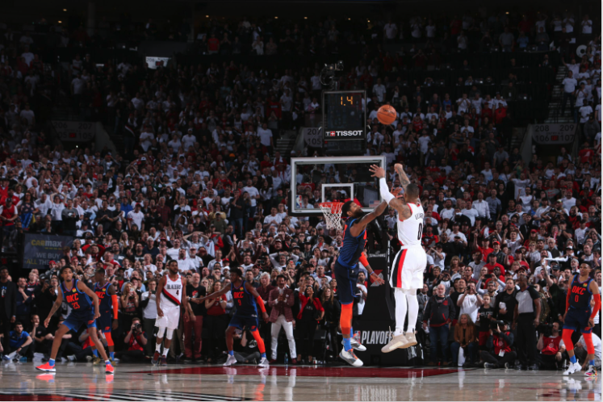

• SHOOTING:
Games are won by efficient scoring. If you make one out of ten shots, something is wrong with your shot or decision making. Every great basketball player has their own way of shooting the ball, but all of them follow soem basic principles. Shooting is all about transferring energy to your arms and wrist. To do so, follow these steps:
- Body Equilibrium: Before recieving the ball or working on shooting the ball, make it an instinct move to have your feet shoulder-width apart, back straight, knees bent and straight, and feet somewhat facing the basket. Some great shooters have proven that your feet don't necessarily need to be facing the rim, as long as it doesn't mess with your shooting angle.
- Ball Positioning: Keep the ball under your chin by bending your arm towards your dominant side (if you are right handed, keep the ball to the right, vice versa), place your non-dominant guide hand on the side of the ball, and properly position your fingers where they do not clash with one another.
- Energy Transfer to Shot: To properly shoot the ball, your body must be in rhythm, meaning that you entire body should move in a coordinated fashion. Begin by elevating the ball to around the height of your eyes. By now, you should be on your toes. Now, jump, extend your elbow and flick your wrist to release the ball with power.
- Follow Through: Unless you know that you need to grab a rebound, keep your arm extended and your wrist flicked to perform a proper follow through. This will increase the backspin and allow the ball to travel sharply.
There is a lot more to shooting, and a lot of it is learnt by doing it yourself. You need to be working on your shot everyday to master it. With these basics, understand what you might need to change so your body is comfortable and the ball is properly leaving your body.

Back to Home